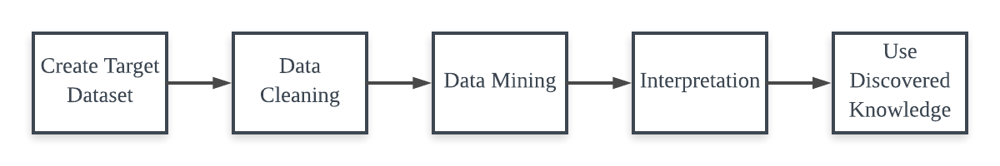

In the modern society, it is common that people open an app like Yelp to check the rating and review of a restaurant before they going into it or check the reviews of a product before they finally making a purchase on Amazon. According to the local consumer review survey by BrightLocal, 90% of consumers read online reviews before visiting a business and 85% of consumers trust online reviews as much as personal recommendations. Actually, for both business runners and customers, efficiently generating reasonable and instructive insights from these review and rating data is an important task. Customers can take these reviews as a valuable reference when making their purchase decision. And from the viewpoint of business runners, reviews not only work as a way of advertisement but also serve as a guidebook for them to improve their service.
However, the review data is always huge in amount and poor in formatting since it is written by many different people. Therefore, it is difficult for a person without professional training to retrieve useful information from this data. Even for a professional, the analysis process is still inefficient because he may need to repeat the same tasks in order to analyze the different datasets.
Previously, standalone software such as Excel or Matlab is used for data analysis and visualization, which requires the user to install this software on PC. And the user has to write queries manually to acquire the information they want. Our goal is to help them to simplify this work with an analysis tool, a big data analysis pipeline working through the whole process. In this project, we built a user-friendly web application, which allowed the user to build their own database by simply uploading their data in JSON format, perform search and analysis on it using a graphical user interface and generate a list of recommendations based on the user's review history. All the complex details of schema design, data cleaning, query generation, and recommendation model training will be hidden from them.
The KDD process was first raised by Usama Fayyad et.al. in 1996. The word KDD stands for "Knowledge Discovery in Databases". It defines a series of steps for data analysis. A complete KDD process involves 9 steps: gather domain knowledge, create target dataset, data cleaning and processing, data reduction and projection, choose data mining function, choose data mining algorithm, data mining, interpretation and use discovered knowledge.
In this project, we designed our system based on this KDD framework. According to the application, five steps are chosen from them to form a pipeline. The picture below shows an overview of our pipeline structure.
The whole system can be divided into three parts: the database, the back-end server and the web user interface. The website serves as the interface between this system and user. It allows user to express their intention using a graphical interface. The server serves as the interface between website and database. It can convert the user requests into commands that can be used for database manipulation and sent to the database as well as convert the query result into user-friendly messages or graphs. The database is used to store data and perform queries. The picture on the right shows a overview of the system architecture.
In order to build a database schema that is compatible for most review systems, we define three relations in this schema: Business, User and Review. The schema designed for review system’s database is shown in the picture on the left.
The work flow of this review system pipeline follows the KDD process design introduced above. The picture on the right is a more detailed illustration of this work flow.
This project is just a prototype of the review data analysis pipeline. More functions are needed in order to make it more complete, useful and approachable. For example, accepting dataset other than JSON format, searching in range and searching with regular expression, more customized analysis and result visualization. And as working with a bigger dataset, it is also a choice to move the database from server's local disk to a cloud-based database.